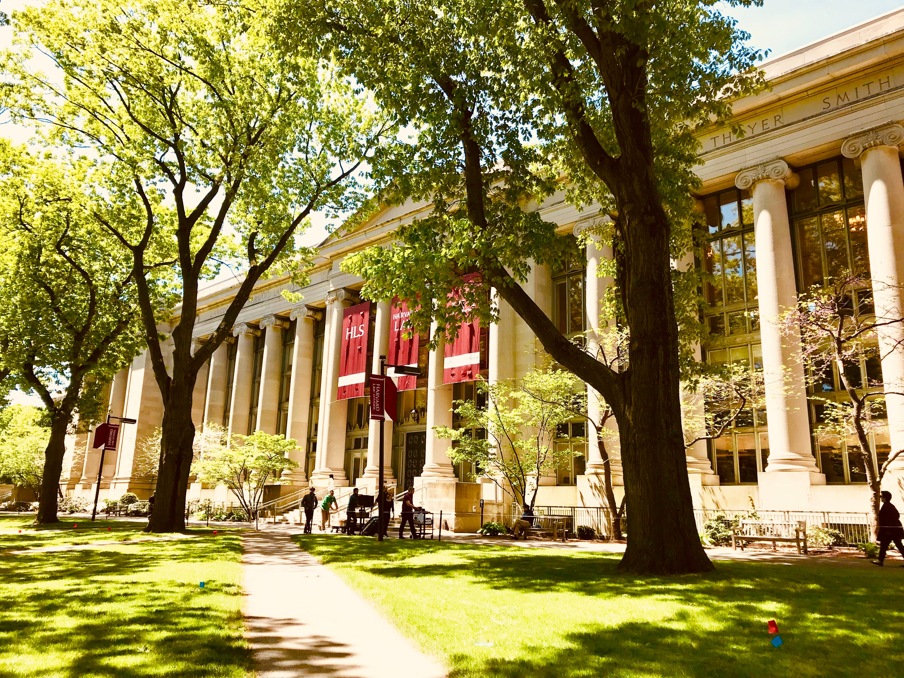

Travel
Chiangmai, Thailand

Chiang Mai, nestled in the lush hills of northern Thailand, is a city that captivates with its unique blend of cultural richness and natural beauty. Situated approximately 700 kilometers north of Bangkok, Chiang Mai is the largest city in the region and serves as the capital of the province of the same name. Its geographical location is nothing short of enchanting, surrounded by forested mountains and picturesque landscapes. This charming city, often referred to as the "Rose of the North," offers visitors a delightful escape from the bustling urban life, inviting them to explore a realm where tradition meets modernity amidst a backdrop of stunning scenery.
The heart of Chiang Mai beats with a rich history that dates back over 700 years. Founded in 1296, the city was originally the capital of the ancient Lanna Kingdom. Today, remnants of its storied past are scattered throughout the city, from the ancient temples that dot the landscape to the preserved city walls and moats that harken back to a bygone era. Among the city's treasures is the revered Wat Phra Singh, a 14th-century temple known for its intricate architecture and revered Buddha image. Chiang Mai's historical sites provide a captivating glimpse into its heritage, making it a destination that seamlessly weaves together the past and present for visitors to explore and appreciate.
Photo Gallery


Montverde, Costa Rica

Monteverde, Costa Rica is situated 4,662 feet above sea level. Monteverde’s famed cloud forests are the byproduct of fog (a thick, low-hanging cloud) tangling amongst the leaves and branches of the forest canopy. Trails and hanging bridges offer a close-up view of the diverse variety of animals and plants living in the forest.
One of the main tourist locations in Monteverde is the town of Santa Elena, which is not only home to a variety of restaurants with delicious food, but a serpentarium as well. You can enjoy hiking, ziplining, and observing the native wildlife while staying in Monteverde.
Photo Gallery


Boston, Massachusetts

Boston, Massachusetts, is a city where American history comes to life. With its storied past, including the Boston Tea Party and the Battle of Bunker Hill, the city preserves its heritage through historic landmarks and the Freedom Trail. Beyond history, Boston is a vibrant cultural and academic center, home to renowned universities like Harvard and MIT, as well as world-class museums, theaters, and a thriving sports scene.
Boston's neighborhoods offer a diverse range of experiences, from the cobblestone streets of Beacon Hill to the trendy shops and restaurants of the South End. The city's green spaces, such as the Boston Common and the Emerald Necklace parks, provide a peaceful escape from the urban hustle, while the bustling waterfront and delicious seafood cuisine showcase its maritime roots. Boston's unique blend of history, culture, and local charm makes it a captivating destination for visitors and a beloved home for its residents.
Photo Gallery
